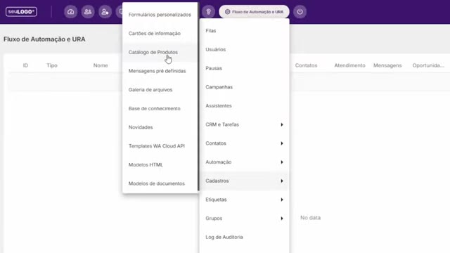
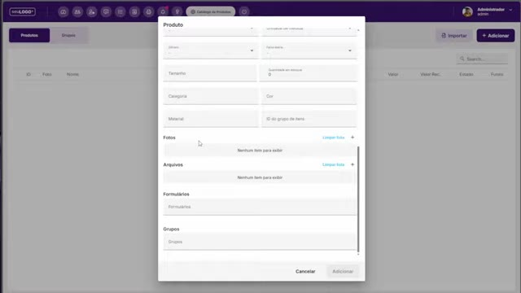
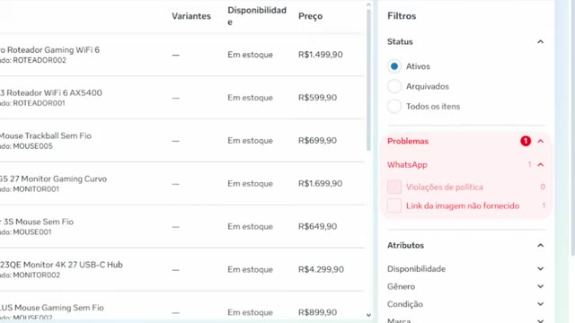
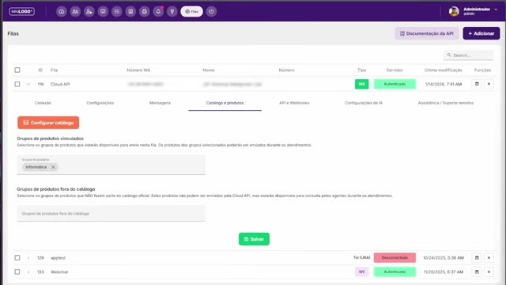
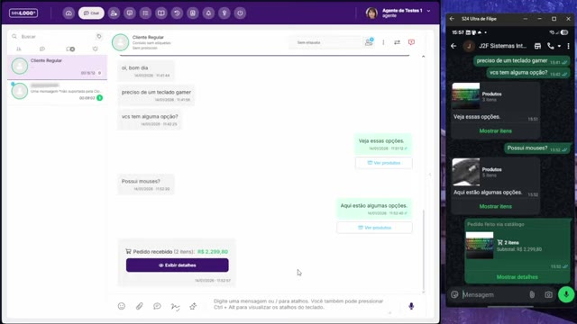

Catálogo de Produtos
Alimente o catálogo do sistema e do WhatsApp (Meta), conecte ao número e transforme o atendimento em uma máquina de vendas.

1. Visão geral
O Catálogo de Produtos é a ferramenta que permite cadastrar, importar e gerenciar produtos, conectá-los ao catálogo do WhatsApp (Meta Business Suite) e enviá-los durante os atendimentos. Com ele o agente envia produtos diretamente do chat e recebe pedidos prontos pelo carrinho do aplicativo do WhatsApp.
O módulo possui duas visões:
- Produtos — cadastro e lista dos itens.
- Grupos — agrupamento lógico dos produtos (um grupo é vinculado a uma fila).
Para utilizar os produtos no WhatsApp é obrigatório criar um grupo de produtos e depois vincular esse grupo a uma fila.
2. Fonte da verdade: de onde vêm os produtos
Antes de qualquer configuração, defina a fonte da verdade — a origem das informações de cadastro dos produtos. A ideia é manter a consistência em vários pontos (sistema, catálogo da Meta), tendo uma única referência.
| Cenário | Fonte da verdade | Como funciona | Recomendado para |
|---|---|---|---|
| Cenário 1 | ERP / e-commerce | Os produtos vêm de um ERP ou plataforma de e-commerce e mantêm o sistema e o catálogo da Meta atualizados via feed (CSV/XML). | Sempre o preferido — varejo convencional, muitos itens, controle de estoque. |
| Cenário 2 | Sistema (cadastro manual) | Você cadastra e gerencia todos os produtos manualmente no sistema e alimenta a Meta a partir de um feed gerado nele. | Poucos itens, alterações raras, sem controle de estoque (serviços e indústria). Ex.: cardápio de uma pizzaria. |
| Cenário 3 | ERP legado + enriquecimento no sistema | O ERP legado (offline) é a fonte da verdade; os dados são importados no sistema, o cadastro é enriquecido (ex.: fotos) e o sistema vira o feed para a Meta. | ERPs legados que não geram links e não fornecem fotos dos itens. |
O feed é um arquivo CSV ou XML (formato Google ou Meta) usado para importar e atualizar o cadastro dos produtos. A maioria dos ERPs gera arquivo compatível; as plataformas de e-commerce, em geral, também.
3. Criando um grupo de produtos
Na aba Grupos, clique em adicionar e dê um nome ao grupo (ex.: “Produtos de informática”). O grupo é o vínculo entre os produtos e a fila de atendimento.
4. Cadastro manual de produtos (Cenário 2)
Na aba Produtos, clique em Adicionar. Os campos seguem a mesma estrutura do catálogo da Meta, com poucos campos adicionais específicos do sistema.

| Seção / Campo | Descrição |
|---|---|
| Código interno | Campo-chave: deve ser igual ao campo ID do produto no catálogo da Meta. Idealmente, contém o ID do produto na fonte da verdade (ex.: ID 1000 no ERP). |
| Arquivos | Anexos complementares ao item (ex.: manual de usuário de uma TV, bula de medicamento). Não são enviados à Meta nem alimentados por feed — são enriquecimento feito no sistema. |
| Formulários | Seleciona formulários personalizados pré-cadastrados. Quando o produto entra no carrinho de uma oportunidade, os formulários são acrescentados à oportunidade no CRM (ex.: formulário de reparo de motor pedindo marca, modelo, quilometragem). |
| Grupos | Vincula o produto a um grupo de produtos. |
| Fotos | Imagem do produto (obrigatória para a Meta — ver seção 7). |
5. Importação de produtos (Cenário 1)
No botão Importar, escolha entre arquivo ou URL:
- Arquivo — importação manual de CSV/XML exportado (ERP legado, por exemplo).
- URL — feed online (e-commerce/ERP na nuvem) com atualização automática regular.
Passos: selecione o formato (Google ou Meta), a estrutura (CSV/XML), o arquivo, o grupo onde os produtos serão criados e clique em Importar. A importação pode levar de alguns segundos até vários minutos (o sistema baixa as fotos e cadastra os itens).

6. Enriquecendo cadastros de ERPs legados (Cenário 3)
ERPs legados offline não fornecem as fotos (a coluna de foto do CSV precisa de um link). Nesse caso: importe os dados no sistema, adicione as fotos no sistema e use o sistema como feed para a Meta. As atualizações seguintes da fonte da verdade virão basicamente para atualizar disponibilidade e preço.
7. Requisitos obrigatórios da Meta
Para o produto ser aceito e exibido no catálogo do WhatsApp, é obrigatório ter:
- Nome
- Descrição
- ID
- Preço
- Foto
Os demais campos (cor, marca, gênero) são opcionais. Produtos com problema de cadastro não aparecem no catálogo do WhatsApp, mas aparecem no catálogo da Meta sinalizados como “produtos com problema”.
8. Meta Business Suite: criando e alimentando o catálogo
No Business Suite da conta onde o número está vinculado, acesse Fontes de dados → Catálogos. Clique em Adicionar → Create a new catalog (ou use um catálogo existente — não é necessário um catálogo exclusivo para WhatsApp).
- Escolha produtos online (portfólio empresarial) e dê um nome (ex.: “Produtos do WhatsApp”).
- Pixel de rastreio não é necessário.
- Selecione conectar a um feed de dados: use URL ou carregue o arquivo do computador.
9. Conectando o catálogo ao número do WhatsApp
- Anote o ID do catálogo (seção “identificação do catálogo” ou na barra de endereços do navegador) — será usado na configuração do sistema.
- No Gerenciador do WhatsApp, na visão geral, clique sobre o número.
- Vá em Catálogo → Escolher um catálogo, selecione o catálogo e clique em Conectar catálogo.
- Certifique-se de que as duas opções exibidas estão ativadas.
10. Verificando erros e políticas comerciais
Após a importação, use o filtro Problemas do catálogo para revisar os itens (ex.: “Link da imagem não fornecido”, “Violações de política”).

11. Gerando o link de feed do sistema (atualização automática)
- No sistema, em Grupos, clique em Links de acesso ao feed.
- Clique em Criar link de acesso e copie o link gerado.
- No catálogo da Meta, clique em Adicionar arquivo de dados e escolha URL.
- Em Atualizar seu feed de dados (atualização, não cadastro/substituição), configure a frequência (ex.: semanal, sexta-feira) e a moeda (Real brasileiro).
Assim, itens enriquecidos no sistema (ex.: produto sem foto corrigido) são propagados para a Meta automaticamente.
12. Configuração final no sistema: vinculando o catálogo à fila
No sistema, acesse Filas, expanda a fila da Cloud API e abra a aba Catálogo e produtos:
- Clique em Configurar catálogo e cole o ID do catálogo da Meta. Os dois indicadores devem ficar habilitados (verdes).
- Defina se o carrinho fica visível/habilitado ou oculto (oculto: o cliente vê os itens, mas não pode adicioná-los ao carrinho nem enviar pedidos).
- Em Grupos de produtos vinculados, selecione o grupo que compartilha os produtos do catálogo da Meta (ex.: Informática).
- Em Grupos de produtos fora do catálogo, selecione grupos não presentes no catálogo da Meta: aparecem para consulta do agente, mas não podem ser enviados no chat nem aparecem para o cliente. Disponível também em filas que não são Cloud API.
- Clique em Salvar.

13. Visão do agente: enviando produtos no chat
Na tela do agente, o botão de anexos ganha a opção Produtos. Nela o agente pode:
- Buscar produtos e visualizar a ficha do produto.
- Visualizar anexos (ex.: manual do roteador Netgear adicionado no cadastro).
- Com o recurso avançado contratado, perguntar ao produto — a IA responde com base na ficha e nos arquivos anexos (ex.: “como configuro o servidor NTP?”; a pergunta em português é respondida em português mesmo com manual em inglês).
- Selecionar vários produtos e enviá-los ao cliente.
No WhatsApp do cliente, a mensagem chega com o botão para exibir os itens e, se o carrinho estiver habilitado, os botões de adicionar ao carrinho. O cliente monta o pedido e envia — o pedido chega no sistema com itens, valores e quantidades.

14. Pedido, CRM e oportunidade
Do pedido recebido, o agente pode abrir a ficha de cada produto e, se houver oportunidade vinculada ao atendimento, adicionar os produtos à oportunidade (na seção de produtos da oportunidade — lembre de salvar/atualizar). Os formulários associados ao produto (seção 4) são acrescentados à oportunidade no CRM.
Consultar produtos, ver a ficha e fazer perguntas funcionam em qualquer fila. Enviar produtos e receber pedidos são recursos exclusivos das filas Cloud API.
15. Automação avançada (Cloud API): fluxo de pedidos com IA
O fluxo de pedidos pode ser automatizado com gatilhos de mensagem e fluxos de automação construídos com auxílio de IA:
- Gatilho de mensagem (executado em mensagens recebidas): se a mensagem contém um pedido, a automação cria uma oportunidade e adiciona os produtos do pedido ao carrinho da oportunidade (etapa inicial, ex.: “Pedido recebido”).
- Automação ao mudar de etapa: quando a oportunidade confirma o pedido, o sistema envia o pedido pelo WhatsApp com link de pagamento (ou código Pix) para o cliente.
- Automação de confirmação: quando o pagamento é confirmado (via webhook/captura ou manualmente), o sistema atualiza o status do pedido (“pagamento efetuado”) e move a oportunidade (ex.: etapa “Aguardando separação”).